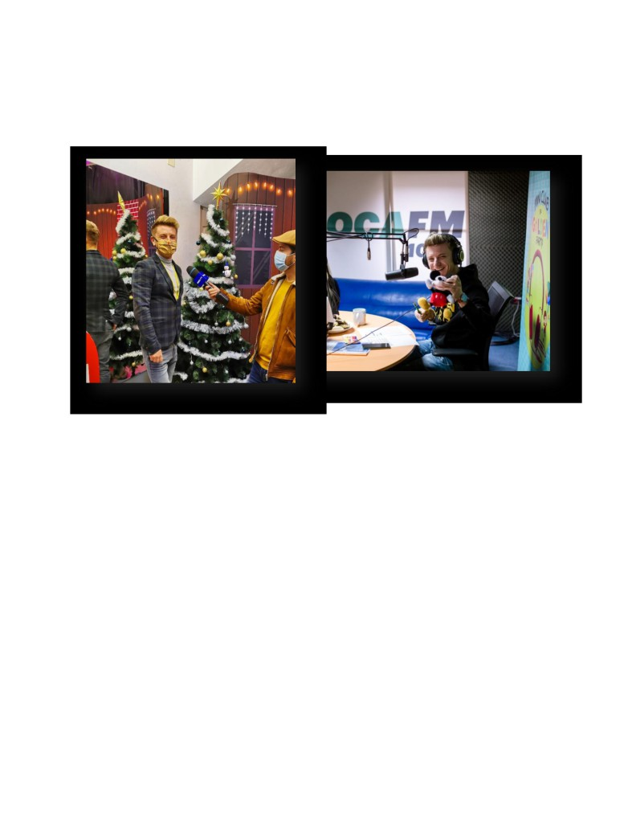
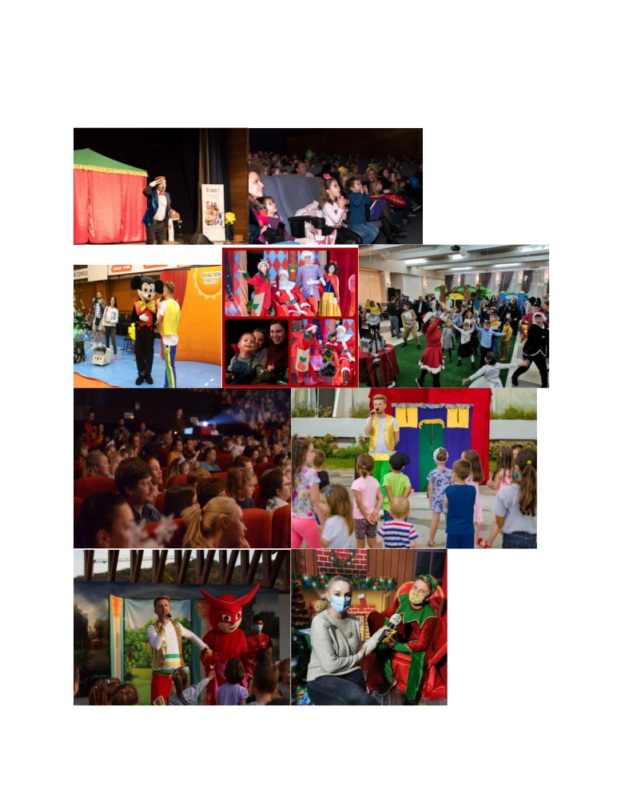

,,Am ieșit din învățământ din motive financiare’’
De la profesor la om de afaceri
Sursa foto: Facebook, Bogdan Tudor
,,Recomand noii generații să-și urmeze visele și să investească în pasiuni
și când pasiunea nu are finanțare, să o facă nevoia pe termen limitat.
Doar pasiunea te va face liber și să trăiești frumos.’’
Bogdan este un bărbat în vârstă de 38 ani care și-a deschis propria
afacere după ce a renunțat la a rămâne cadru didactic. De la profesor, la
ghid turistic și însoțitor de bord pe avion, iar de la asta a ajuns să își
înființeze o firma, iar cu timpul a mai înființat una, ambele fiind cu și
despre copii. Două firme care sunt făcute pentru evenimente și care
produc spectacole și aduc multe zâmbete pe fețele copiilor, cât și pe
fețele părinților.
aaaaaaaaaaaaaaaaaaaaaaaaaaaaaaaaaaaaaaaaaaaaaa
aaaaaaaaaaaaaaaaaaaaaaaaaaaaaaaaaaaaaaaaaaaaaaaaaaaaaaaaa
Hjsagfdljsagflsgafgslakfgslakfdklsjagfdkjsaflksgaflkdsgafklsgafkg
,,-De ce ai ales să te faci profesor?
dfsadsafdsafdsafdsafsafdsadfsafdsafdsafdsafdsafdsafdsafdsafdsafdsafdsf
,,- Am ajuns profesor pentru că am fostlaliceu pedagogic, ca orice
adolescent debusolat voiam să fiu la un profil la care nu se face
matematică, datorită acestui fapt am ales liceul acesta și aveam doar o
oră pe săptămână de matematică. Profesorii nu au avut metode să mă
învețe, consider că era mai ușor să le explice celor care iubeau
matematică decât să te facă să o înțelegi și să o iubești. Am fost singurul
băiat dintr-o clasa de 35 de fete, și da, a fost traumatizant. Și pentru că
îmi plac extremele facultatea am făcut-o doar cu băieți și am dat
admitere la teologie secția pastorală la București. Imediat după ce am
terminat liceul am fost repartizat că învățător la doar 18 ani când am și
început să predau, era nevoie mare de cadre didactice dat fiind timpul de
atunci, anii 2000. Dimineață mergeam la școală predam copiilor și după
masa mergeam la facultate. Am predat 4 ani în ciclul primar și după încă
3 ani în ciclul liceal, dar asta doar după ce am terminat
facultatea. Copiii mă iubeau.
După terminarea facultății am predat geografie și istorie la clase de seral,
la clase de matematică. Adolescenții mă iubeau, am încercat să-i fac să
iubească ceea ce predam nu ceea ce îmi place mie. În viață am plecat de
la pragmatic la partea sentimentală cu toate că susțîn că fac doar ceea ce
simt.’’
,,-Și ce te-a făcut să te lași de meseria de profesor ?’’
,,-Am ieșit din învățământ din motive financiare, pentru că în perioada
respectivă până în 2010 a început criză economică, iar eu nu mă mai
descurcăm cu banii, era un salar foarte mic.
,,Pe perioada verii colaboram cu o agenție de turism foarte mare (
Christian Tour). Iar motivul pentru care am părăsit catedra școlii a fost
turismul, mai exact am avut o colaborare cu această firmă de a fi ghid și
reprezentant de turism până în 2012. Lucram sezonier de prin martie
până prin noiembrie pe timp de vara. Fiind în Grecia, căldura era mai
mare, iar sezonul era mai lung.
În perioada în care lucram în turism mi-am făcut o firmă, asta fiind prin
2008, habar n-aveam cu ce se mănâncă a avea o firma. Am făcut firma
aceasta pentru că eram un umanist și de asta am făcut o firma care să fie
legată de oameni. Sunt două tipuri de oameni: care au bussinese-uri
moștenite de la părinți sau preluate prin alte afaceri. Și cei care fac
afaceri cu sufletul, că mine. Nu m-am împrumutat de la stat niciodată, nu
am luat niciun fond niciodată, ăsta e motivul pentru care mi-a
luat mulți ani să o pun pe picioare..
,,- De unde ai avut bani de investit in firmă’’
,,-Banii de investit în firmă i-am avut din Grecia, cei 4 ani de turism în
care am câștigat foarte bine, dar și din anii în care am fost însoțitor la
bord. Am avut posibilitatea să strâng banii făcuți acolo deoarce aveam
totul asigurat, oamenii îmi luau de mâncare, îmi dădeau apă și aveam
multe avantaje dat fiind faptul că eram ghid. Aveam reduceri la
magazine de haine, aveam reduceri la restaurante și datorită acestui fapt
am reușit să economisesc foarte mulți bani.’’
,,-De ce ai ales să mergi și în aviație?’’
aaaaaaaaaaaaaaaaaaaaaaaaaaaaaaaaaaaaaaaaaaaaaaaaaaaaaaaaaaaaaaaaa
dfsadsafdsafdsafdsafsafdsadfsafdsafdsafdsafdsafdsafdsafdsafdsafdsafdsf
,,-În aviație m-am angajat pentru că mi se părea wow uniforma, mi se
părea wow să zbori și credeam că se câștigă bine, pasiunea am neglijat-o
și aviația am făcut-o din nevoie financiară. Îmi reproșez faptul că nu m-
am deschis publicului mai devreme.’’
dfsadsafdsafdsafdsafsafdsadfsafdsafdsafdsafdsafdsafdsafdsafdsafdsafdsf
,,Recomand noii generații să-și urmeze visele și să investească în pasiuni
și când pasiunea nu are finanțare să o facă nevoia pe termen limitat.
Doar pasiunea te va face liber și să trăiești frumos.’’
,,-Cum te descurci acum în timpul pandemiei dat fiind faptul că
spectacole nu se mai pot ține și nici evenimente?
dfsadsafdsafdsafdsafsafdsadfsafdsafdsafdsafdsafdsafdsafdsafdsafdsafdsf
,,-Pe timpul pandemiei am creat 4 noi spectacole cu păpuși, teatru de
păpuși, aceste spectacole au loc online și bineînțeles cu preț foarte mic,
pot spune că după un spectacol că acesta se câștigă de 100 de ori mai
slab față de un spectacol la care aveam o scenă și o sala plină de copii și
de părinți. Cele 4 spectacole adaptate timpului de acum sunt: Capra cu
trei iezi, Scufița Roșie, Petrecere la Palat și Ursul păcălit de Vulpe. Sunt
spectacole în care eu cred la momentul actual, pe timpul pandemiei.’’
dfsadsafdsafdsafdsafsafdsadfsafdsafdsafdsafdsafdsafdsafdsafdsafdsafdsf
Din toate acestea am învățat că nu trebuie să așteptăm să fim căutați de
către clienți, noi să-i căutăm pe ei, este o viziune pentru evenimentele și
spectacolele de copii și susțin astadin punct de vedere economic.
Bussinese-ul l-am făcut din ceea ce am simțit, nu din ce am studiat.
sadfsafafdsfaaaaaaaaaaaaaaaaaaaaaaaaaaaaaaaaaaaaaaaaaaaaaaaaaaaaaaa
aaaaaaaaaaaaaaaaaaaaaaaaaaaaaaaaaaaaaaaaaaaaaaaaaaaaaaaaaaaaaaaaa
aaaaaaaaaaaaaaaaaaaaaaaaaaaaaaaaaaaaaaaaaaaaaaaaaaaaaaaaaaaaaaa

aaaaaaaaaaaaaaaaaaaaaaaaaaaaaaaaaaaaaaaaaaaaaaaaaaaaaaaaaaaaaaaaa
Sursa foto: Facebook, Golden Party si Bogdan Tudor